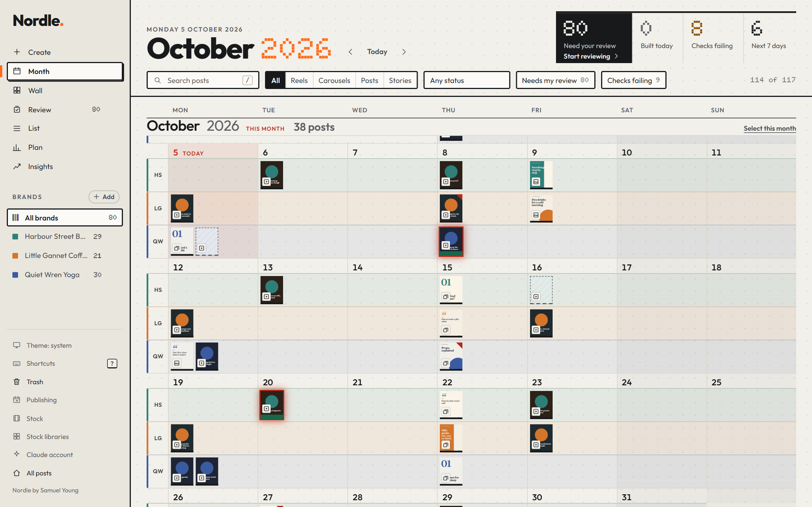

Nordle.
A social-media editor you and Claude edit together. It makes video from your footage, motion graphics, carousels, single graphics and the words that go with them, and you review every post before it goes anywhere.
Nordle runs on your own computer and is free and open source. When a post is signed off you can schedule it to your channels through Buffer.

You need Node.js 20 or newer and Claude Code, signed in. The code, the sample project and the full instructions are on GitHub.
git clone https://github.com/samuel-d-young/nordle-socials-creator nordle && cd nordle node setup.mjs --register node server.mjs --open
In Nordle’s Publishing window, “Sign in with Buffer” opens Buffer in a new tab. You approve Nordle there, and Nordle (the copy on your computer) can then read your Buffer channels and posts and schedule the posts you choose. You can still paste a Buffer API key instead.
This website exists so that Buffer has a secure (https) address to send you back to. The page Buffer sends you to stores nothing: no cookies, no analytics, no accounts, nothing in your browser. All it sees is a one-time code in the address, which is useless without a secret that never leaves your computer, and it passes that on to Nordle on your own computer (127.0.0.1) and nowhere else. Nordle itself runs on your computer and sends nothing to this site. Like any web host, GitHub Pages may keep its own ordinary access logs; nothing here adds to them.
The full policy is the Nordle privacy policy.